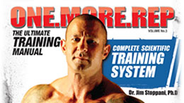

A lot of things come to mind when you start talking about hitting the gym.
The body you've always wanted, How good it feels to workout, and how awesome those protein concoctions taste. Some of you may be wondering what the heck we are talking about here, But trust us when we tell you. You will not be asking those questions for long.
Working out is an art, It is a science that goes down to the very roots of every muscle every fiber and yes, even every braincell that exists inside of your body. We say this because Lifting weights, or even doing those sweat grasping cardio routines, Can cause you to want to not go back to the gym tomorrow. This is where the art comes in.
As soon as you can train your mind to let go of those feelings, and reach a point where instead, it thinks of how amazing it will feel to get back into the gym tomorrow. Then you have mastered the craft, and you will truly create the body that you have always dreamed of.
We are here to help you do that! The tuffest part of working out is doing it with two people. Now before you go out and say these people are full of it! Hear us out.
Working out with two people is the tuffest part because those two people consist of you, and that little voice inside of you who may tell you that this is too hard or that is too heavy and yes NEVER GO BACK THERE AGAIN. Working out is hard on your body, it taxes every fiber inside of you and makes you want to cry at the end of the day if you do it correctly. We are here so that you never have to quit on yourself or your dreams ever again.
Maybe you are 150 pounds over weight and you want to shred that extra baggage off, Or maybe you are 50 pounds under weight, and you want to gain that extra 50 in solid muscle. People are a big enemy often criticizing you for the way you look, calling you fat , or even saying that you will never put on that much muscle no matter how hard you try. People are nasty! But you are even worse, people are just people they want to bring other people down to make themselves feel better. The things they say that hurt you! They don't even remember that they said them the next day, but YOU, You remember it and not only do you remember it for a long time, you let it eat at you from the inside, to the point that you actually quit, eat more, or flat out BELIEVE them!
That is all your fault, No one can control you no matter how bad they want to, The more hurtful they are the more you have to learn to let go and only focus on what you believe in. You may be fat, Look fat, and feel fat, But heres a Secret! You are never really fat until you commit to BELIEVING that YOU actually are.
If you are fat, But you believe that you wont be for long, and you bust your butt and focus only on believing in yourself and your Drive to be what you want to be.
Hold on to yourself because you and you alone are the key to your success, You can work out as hard and long as you want, Eat right and drink all the water in the world, but until you believe that you are what you want to be , you will never be successful.
We are here to help keep you on that path. With extensive work out plans, healthy meal guides, and all of the motivation that you need to stay on top of your goals.
There is a philosophy that we believe in here and we want you to really understand it:
We hope that you can keep up on your goals, and we want you to know that no matter what happens, If you always believe in yourself and use us as your guide, You will Succeed in your goals, Don't let failure bring you down, It was designed to lift you up. The world can beat you all that it wants but you are the only one who can say, "I'm too STRONG for this crap!",and make a difference. Make the world you, and give it all that you got because you only have this chance one time. You are here once and only once and It is up to you to live it the way that you want too. Work hard, Always believe, and keep it real! Go own every workout that you do, and shatter your GOALS!
6 WEEKS TO SICK ARMS!!
What if there was a way to make your arms finally grow the way that you want them too? Now what if you could do it in as little as 6 weeks! Now you can! Try BPI's 6 Weeks To Sick Arms work out Today! Some of the industries best bodybuilders went to great lengths to put out a plan as sick as this!!
Start Today!